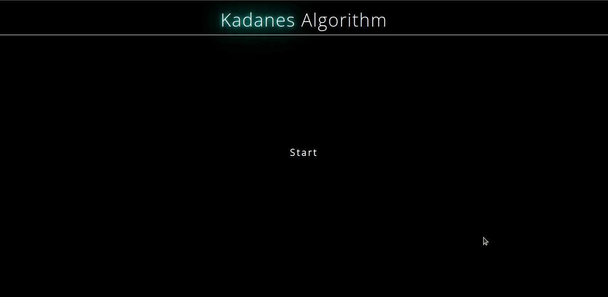

In the infrastructure of facebook network, to find the maximum repost by treating post as elements in an array where each element represents the influence or impact of a retweet we can use Kadane’s algorithm. Kadane’s algorithm will determine the maxmimum cumulative imapct by traversing through the posts. it can be adapted or used in a modified form to solve finding the maximum reposts of a post in Facebook
limitation
Real time data updates
multiple maximum subarray